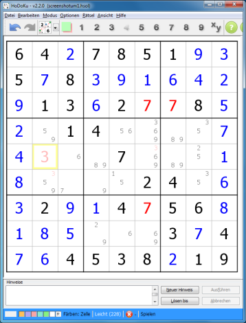
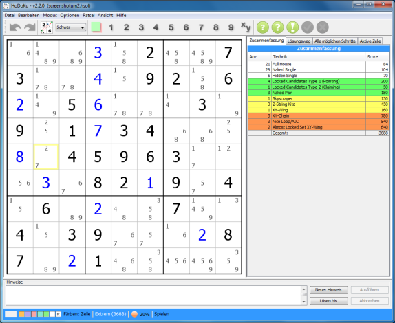
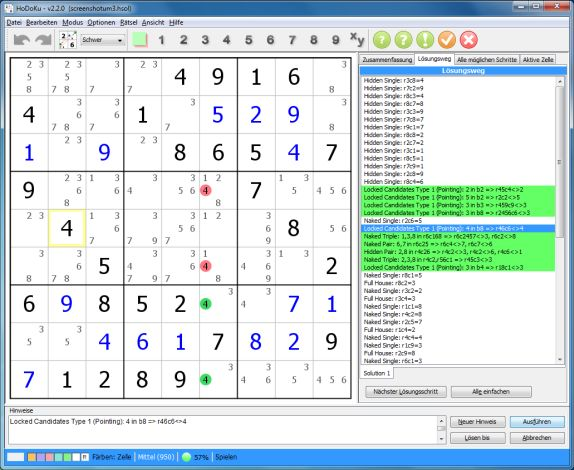
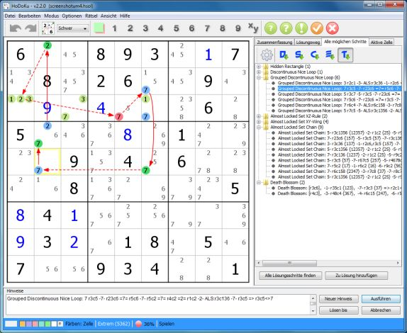
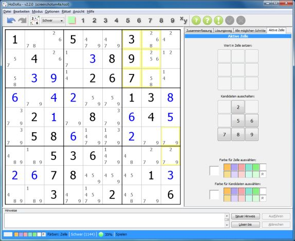
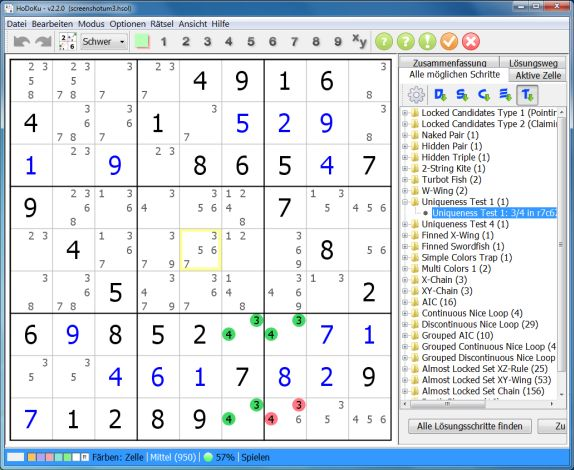
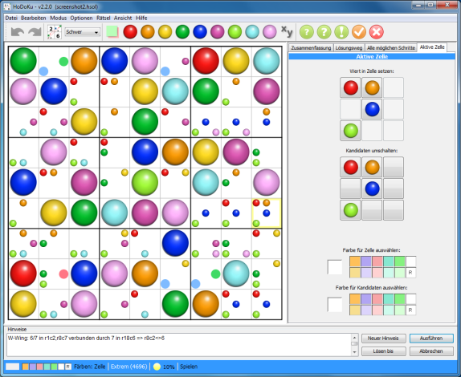

Kapitel 1: Einleitung
Inhaltsverzeichnis
Funktionen
Es gibt tausende von Sudoku-Programmen, warum also sollte man ausgerechnet dieses verwenden?
Die meisten Sudoku-Programme verfügen nur über eine beschränkte Anzahl an Funktionen. Sie können Sudokus erzeugen (normalerweise nur eher einfache), sie können einfache Sudokus mit Logik lösen, müssen aber aufgrund der begrenzten Anzahl an implementierten Lösungstechniken relativ bald auf Brute Force ("Rohe Gewalt" - also einfach raten) zurückgreifen.
Sie erlauben es Werte und Kandidaten einzugeben und die Lösung des Sudokus anzuzeigen. Wenn man mehr will (zum Beispiel mehr und anspruchsvollere Techniken lernen, schwere Sudokus analysieren...), nimmt die Anzahl an verfügbaren Programmen schnell ab.
HoDoKu bietet eine reiche Auswahl an Funktionen, mehr verschiedene Lösungstechniken als die meisten anderen Programme und eine einfache grafische Benutzeroberfläche. Da das Programm in Java geschrieben wurde, läuft es außerdem auf allen Betriebssystemen und Plattformen, für die Java verfügbar ist.
Eine kurze Liste mit Dingen, die man mit HoDoKu machen kann:
- Erzeugen von Sudokus in fünf verschiedenen und voll konfigurierbaren Schwierigkeitsstufen. Erzeugen von Sudokus, die bestimmte Lösungstechniken enthalten (z.B. um neue Arten Sudokus zu lösen auszuprobieren). Alle von HoDoKu erzeugten Rätsel haben natürlich garantiert eine eindeutige Lösung.
- Sudokus lösen; wenn man einmal hängen bleibt, hilft das Hinweis-System weiter (natürlich auch voll konfigurierbar)
- Alle möglichen Lösungsschritte für den aktuellen Zustand des Sudokus anzeigen lassen (eignet sich gut zum Studieren der einzelnen Lösungstechniken). Außerdem kann man verschiedenen Lösungen für ein und dasselbe Sudoku erzeugen
- Man hat die Wahl zwischen den mehr als 90 verschiedenen Lösungstechniken, die HoDoKu zur Zeit unterstützt
- Verfügbare Lösungsschritte können im Puzzle grafisch angezeigt werden (ist ein großartiges Werkzeug um neue Techniken zu erlernen)
- HoDoKus Filter helfen beim schnellen und unkomplizierten Finden der einfachen Lösungtechniken (dafür kann man sich dann auf die schwierigen Techniken konzentrieren)
- Die Größe des Programmfensters kann beliebig verändert werden; die Anzeige des Sudokus nimmt automatisch den gesamten verfügbaren Platz in Anspruch
- Sudokus und Lösungswege können in eine Datei gespeichert werden (natürlich unabhängig vom aktuellen Zustand des Sudokus)
- Unbegrenztes Rückgängig/Wiederherstellen
- Von den Sudokus können hochauflösende Grafiken angefertigt werden
- Der Batch-Modus von HoDoKu erlaubt das Erzeugen von Rätseln, die bestimmte Techniken enthalten, sowie das Lösen von Sudokus mit beliebigen Konfigurationen
- Erstellen Sie eigene Sudoku-Booklets in verschiedenen Layouts
- Wenn Ihnen Farben lieber sind als Ziffern, probieren Sie HoDoKus neuen ColorKu-Modus
Anzeigemodi
HoDoKu verfügt über fünf verschiedene Anzeigemodi (alle auch im ColorKu-Modus verfügbar):
- Nur Sudoku: Kann zum reinen Spielen verwendet werden (ohne alle Extras)
- Sudoku + Zusammenfassung: Die Zusammenfassung zeigt, welche Lösungstechniken HoDoKu verwendet hat, als es das Rätsel gelöst hat. Das eignet sich gut dazu festzustellen, ob es Spaß machen wird, ein bestimmtes Rätsel zu lösen
- Sudoku + Lösungsweg: HoDoKus Lösung ansehen, nach Belieben ändern oder eigene, neue Lösungen erstellen
- Sudoku + Alle Lösungsschritte finden: Listet alle verfügbaren Schritte für den aktuellen Zustand des Sudokus auf
- Puzzle + Aktive Zelle: Zum Setzen von Werten in Zellen, Ein-/Ausschalten von Kandidaten oder Wählen von Farben, ohne die Tastatur verwenden zu müssen.
Die Anzeigemodi können über das Ansicht-Menü gewechselt werden. Ist einer der Nicht-Standard-Modi aktiv (Zusammenfassung, Lösungsweg, Alle Schritte oder Aktive Zelle), kann der Modus mit Hilfe der Reiter im rechten Teil des Fensters verändert werden.
Nur Sudoku (Standard)
Der Standard-Modus verfügt über den Sudoku-Bereich, einen Hinweis-Bereich, das Menü, eine Werkzeugleiste und eine Statusleiste.
Die Werkzeugleiste enthält:
- Die Rückgängig/Wiederherstellen-Knöpfe
- Den "Neues Rätsel erzeugen"-Knopf
- Eine Auswahlbox um den Schwierigkeitsgrad der neu erzeugten Sudokus einzustellen
- Knöpfe für die Filter (siehe Filter verwenden)
- Optional: Knöpfe zum Anzeigen von Hinweisen und Lösungsschritten.
Die Statusleiste enthält Pseudo-Knöpfe zum Wählen von Farben (siehe Maus verwenden oder Coloring) und zum Setzen des Färbemodus (Zelle oder Kandidat). Wenn ein Sudoku geladen wurde, werden Bewertung und Schwierigkeitsstufe (siehe Bewertung und Schwierigkeitsstufen) sowie eine Fortschrittsanzeige (siehe Fortschrittsanzeige) angezeigt. Das letzte Feld zeigt den Spielmodus (siehe Spielmodi).
Im Rätsel-Bereich werden Angaben (Werte für Zellen, die zum Ausgangszustand des Sudokus gehören) schwarz angezeigt, sie können nicht geändert werden. Vom Spieler eingegebene Werte werden blau gezeichnet und die Kandidaten (verbleibende mögliche Werte für jede Zelle) sind hellgrau. Die Kandidaten werden nur angezeigt, wenn "Alle Kandidaten anzeigen" im Optionen-Menü gewählt ist. Abhängig vom Zustand der anderen Schalter in diesem Menü kann HoDoKu ungültige Werte oder Werte, die von der korrekten Lösung abweichen, speziell anzeigen.
Der Screenshot zeigt beide Möglichkeiten: Der Wert 7 wurde fälschlicherweise in r3c6 (die Zelle in Zeile 3 und Spalte 6) eingegeben. Das verträgt sich natürlich nicht mit den (richtigen) Werten 7 in r3c7 (selber Wert zwei Mal in der selben Zeile) und r7c6 (selber Wert zwei Mal in der selben Spalte). Wenn "Ungültige Werte anzeigen" gewählt wurde, werden alle drei Zellen als ungültig markiert und rot angezeigt.
In Zelle r5c2 wurde der Wert 3 eingegeben. Das ist an sich nicht ungültig (es verstößt nicht gegen die Regeln), allerdings hat die Lösung eigentlich eine 5 in dieser Zelle. Wenn "Abweichungen von der Lösung anzeigen" gewählt wurde, wird die 3 als Abweichung markiert und hellrot angezeigt.
Die gleichen Farben werden auch auf fehlerhafte Kandidaten angewendet. Durch die 3 in r5c3 werden die Kandidaten 3 aus r4c2, r6c2, r5c6 und r5c8 gelöscht. Unglücklicherweise ist 3 aber die korrekte Lösung für r6c3 und r5c6, die Kandidaten 3 werden daher in diesen Zellen ebenfalls hellrot gezeichnet.
Der Hinweis-Bereich im unteren Teil des Fensters enthält eine Textrepräsentation des Lösungsschrittes, der derzeit im Sudoku angezeigt wird. Das Hinweis-System wird im Kapitel 2 in Hinweise und Hilfen detailliert erklärt. Der Hinweis-Bereich kann ausgeblendet werden, um mehr Platz für das Sudoku selbst zu schaffen. Dies ist speziell für Geräte mit niedrig auflösenden Bildschirmen (Laptops...) gedacht.
Zusammenfassung
Die Zusammenfassung zeigt in einer Tabelle, welche Lösungstechniken HoDoKu beim Lösen des Sudokus wie oft verwendet hat. Zusätzlich wird für jede Technik angezeigt, wie oft sie vorgekommen ist und welche Bewertung das ergibt (siehe Bewertung und Schwierigkeitsstufen).
Dieser Anzeigemodus ist auch besonders dann hilfreich, wenn man entscheiden will, ob es Spaß machen wird, ein neu erzeugtes Sudoku zu lösen. Sudokus, die Techniken enthalten, die man nicht besonders mag, können damit leicht übersprungen werden (natürlich kann man HoDoKu auch so konfigurieren, dass solche Sudokus gar nicht erst angezeigt werden, siehe Sudoku erzeugen).
Im Screenshot werden die optionalen Hinweis/Lösungsschritt-Buttons in der Werkzeugleiste angezeigt. Der Hinweis-Bereich wurde entfernt, um das Rätsel größer zu machen. Die Fortschrittsanzeige gibt an, wie weit das Sudoku bereits gelöst wurde: Die Bewertung aller noch nötigen Lösungsschritte ist 20 % der Gesamtbewertung des Sudokus und es gibt mindestens noch einen Lösungsschritt der Stufe "Unfair" zu bewältigen (wird durch die orange Kugel symbolisiert).
Lösungsweg
Dieser Modus zeigt, wie HoDoKu das Sudoku gelöst hat. Man kann mit einem einfachen Doppelklick zu einer bestimmten Stelle in der Lösung springen. Außerdem kann dieser Modus als Ausgangspunkt für das Erstellen eigener Lösungen verwendet werden.
Lösungswege sind nicht fix, sie können jederzeit geändert werden. Neue oder andere Lösungsschritte können in den Lösungsweg eingefügt werden (siehe Mit Lösungswegen arbeiten). HoDoKu unterstützt beliebig viele verschiedene Lösungen für ein und dasselbe Sudoku. Lösungswege werden automatisch mit gespeichert, wenn Sudokus in Dateien geschrieben werden.
Alle möglichen Schritte
In diesem Modus kann man sich alle Lösungsschritte anzeigen lassen, die im derzeitigen Zustand des Sudokus angewendet werden können. Speziell bei einfachen oder mittelschweren Sudokus kann die reine Menge an verschiedenen Schritten ziemlich überwältigend werden. Um das zu vermeiden, kann die Suche beliebig konfiguriert werden (siehe Alle möglichen Schritte finden).
Der "Alle möglichen Schritte"-Modus dient auch dazu neue Lösungsschritte in bestehende Lösungswege einzubauen. Außerdem ist er eine großartige Lernhilfe und man kann mit seiner Hilfe leicht entscheiden, ob eine bestimmte Technik jetzt anwendbar ist oder nicht (einfach nach allen Vorkommen dieser Technik suchen und nachschauen, ob die eigene Variante vorkommt).
Aktive Zelle
Die Ansicht "Aktive Zelle" ist eine Art Lupe für die gerade ausgewählte Zelle oder Gruppe von Zellen. Sie erlaubt es, Werte in Zellen zu setzen oder Kandidaten ein- bzw. auszuschalten. Im Screenshot kann (wegen des Locked Triples in den Zellen r123c9) Kandidat 2 aus allen selektierten Zellen entfernt werden, indem die "2" unter "Kandidaten ausschließen" gedrückt wird.
Mit den Farbpaletten im unteren Teil der Ansicht kann in den Färbemodus für Zellen oder Kandidaten gewechselt werden (siehe Maus verwenden oder Coloring).
Größe der Anzeigebereiche verändern
Die Größe der einzelnen Anzeigebereiche kann praktisch unbegrenzt angepasst werden. Prinzipiell versucht der Rätsel-Bereich, so viel Platz wie möglich für sich in Anspruch zu nehmen. Der obere Rahmen des Hinweis-Bereichs und der rechte Rahmen des Sudoku-Bereichs lassen sich aber mit der Maus angreifen und verschieben, um die Größe der einzelnen Bereich zu verändern.
Hinweis-Bereich und Werkzeugleiste können ausgeblendet werden, um mehr Platz für das Rätsel zu bekommen. Das ist besonders auf Bildschirmen mir geringer vertikaler Auflösung nützlich, z.B. auf Laptops oder Tablets. Der Menüpunkt "Ansicht|Vollbildmodus" vergrößert das Sudoku so weit es geht.
Der Zustand des Fensters wird beim Beenden des Programms automatisch gespeichert und beim nächsten Programmstart wiederhergestellt. Der Menüeintrag "Ansicht|Ansicht zurücksetzen" setzt alles auf HoDoKus Standardeinstellungen zurück.
Schriftgröße verändern
HoDoKu verwendet die Standardeinstellungen des Betriebssystems, wenn Menüs oder Dialoge angezeigt werden sollen. Es ist jedoch möglich, die Schriftgröße unter "Einstellungen|Allgemein" zu verändern: Dazu muss "Standardgröße für Schriftarten" abgewählt werden, dann kann unter "Benutzerdefinierte Schriftgröße" ein neuer Wert eingegeben werden. Das ist besonders für große Monitore und für sehbehinderte Benutzer gedacht.
Der Screenshot zeigt HoDoKus "Alle möglichen Schritte"-Modus mit einer benutzerdefinierten Schriftgröße von "16".
ColorKu-Modus
Im ColorKu-Modus verwendet HoDoKu Farben anstelle der üblichen Ziffern. Alles andere funktioniert wie im normalen Sudoku-Modus.
HoDoKu ausführen
HoDoKu ist in Java/Swing geschrieben und sollte daher auf jeder Plattform laufen, die von Java unterstützt wird (getestet auf Windows und Linux - Ubuntu/GTK+-LAF). Da das Programm in Java geschrieben wurde, muss die Java Laufzeitumgebung (JRE) Version 1.6 oder höher auf dem Computer installiert sein, um HoDoKu ausführen zu können. Die Java Laufzeitumgebung kann von folgender Adresse bezogen werden:
http://www.oracle.com/technetwork/java/javase/downloads/index.html.
Windows
Für Windows existiert ein Installationspaket (*.msi), das auf allen Windows-Versionen verwendet werden kann. Es erzeugt einen EIntrag im Startmenü und eine Verknüpfung am Desktop und verbinden *.hsol und *.hcfg-Dateien mit dem Programm. HoDoKu kann auch von einem USB-Stick gestartet werden (siehe unten).
Andere Betriebssysteme
Für alle Betriebssysteme außer Windows muss hodoku.jar verwendet werden. HoDoKu benötigt ziemlich viel Arbeitsspeicher (speziell wenn die Funktion "Alle verfügbaren Schritte finden" verwendet wird). Die empfohlene Art HoDoKu zu starten ist:
java -Xmx512m -jar hodoku.jar
Bitte beachten: Der Parameter "-Xmx" ist nur in der von Oracle zur Verfügung gestellten Laufzeitumgebung enthalten. Wird eine andere Umgebung verwendet, muss der korrekte Parameter zum Setzen der Obergrenze des Heap-Speichers der Dokumentation entnommen werden.
Portables HoDoKu
HoDoKu ist portabel: hodoku.exe oder hodoku.jar auf einen USB-Stick, eine DVD oder ein Netzwerklaufwerk legen und direkt von dort starten. Solange eine passende Java-Laufzeitumgebung am Rechner vorhanden ist, läuft HoDoKu ohne Probleme.
Es ist auch möglich, eine eigene Konfiguration zu verwenden: HoDoKu wie gewünscht konfigurieren, die Konfiguration in eine Datei "hodoku.hcfg" (ohne Anführungszeichen) speichern und diese Datei ins selbe Verzeichnis legen wie die exe- oder jar-Datei. Die in der Datei gespeicherten Optionen werden beim Programmstart automatisch gelesen.
Vorsicht: Änderungen an der aktuellen Konfiguration werden nicht automatisch in der oben beschriebenen hodoku.hcfg-Datei gespeichert.
Copyright © 2008-12 von Bernhard Hobiger
Zuletzt geändert am 5. Mai 2025 von shorty#3746
(basierend auf dem 1to9only Github-Repo)
Alles Material auf dieser Site unterliegt der GNU FDLv1.3.